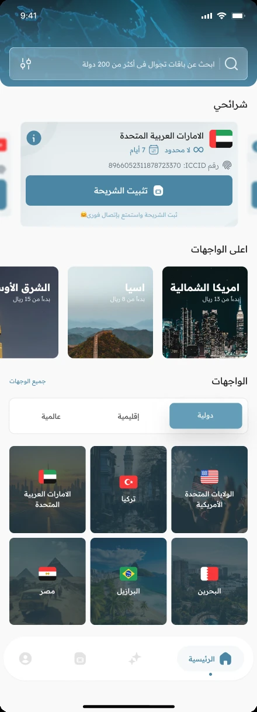

البداية من الوجهة
تصفح الدول والمناطق يوفّر مسارين واضحين للوصول إلى الباقات. وتظهر معلومات التغطية مع الوجهة قبل إتمام الشراء.
شرائح إلكترونية · تطبيق وموقع
من اختيار وجهة السفر إلى الاتصال بالإنترنت.
إعادة تصميم v3.6.2 · قيد التطوير

01 / السياق
يساعد تجوال المسافرين على شراء باقات الشرائح الإلكترونية وإدارتها. عملت على مرحلتين من إعادة تصميم التطبيق، إلى جانب الموقع. لوحات التشغيل معروضة في صفحة مشروع مستقلة.
02 / دوري
03 / قرارات التصميم
تصفح الدول والمناطق يوفّر مسارين واضحين للوصول إلى الباقات. وتظهر معلومات التغطية مع الوجهة قبل إتمام الشراء.
تأكيد الطلب يقود إلى التثبيت، مع إرشادات لرمز QR والإعداد اليدوي والتفعيل، كجزء من رحلة الشراء.
قسم شرائحي يجمع تفاصيل الشريحة والباقة داخل التطبيق، لتستمر الرحلة بعد الدفع.
سياق النشاط / إجماليات سنوية
89,314 105,105
زيادة 15,791 · بنسبة 17.7%
129,341 214,515
زيادة 85,174 · بنسبة 65.9%
إجماليات سنوية سابقة ولاحقة قدمها المصمم من لوحة المنتج، دون تحديد سنوات القياس. توضح الأرقام نمو النشاط، ولا تثبت أثر إعادة التصميم وحدها.
تطور التصميم
الواجهة الأصلية، ثم إعادة التصميم الأولى، وأحدث تصميم. افتح أي شاشة لعرضها بالحجم الكامل.




04 / التسليم
تجوال متاح على App Store. إعادة التصميم v3.6.2 المعروضة هنا قيد التنفيذ حاليًا مع فريق التطوير. شمل دوري التطبيق والموقع ولوحات التشغيل.
عرض التطبيق على App Store